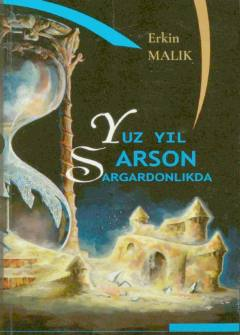

YYQuvg'indagi bolaning og'ir taqdiri va muhojirlikdagi sinovlari haqidagi tarixiy qissa.
Mazkur tarixiy qissada o'tgan asrning o'ttizinchi yillarida Andijondan quvg'in qilingan Nuriddin ismli bolakayning boshidan kechirgan og'ir sinovlari va muhojirlikdagi hayoti hikoya qilinadi. Qahramon dunyoni bola ko'zi bilan ko'rib, necha-necha uqubatlarni yengib o'tadi va vatandoshlarning taqdirini yoritadi.